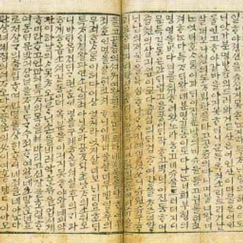

<ion-header>
  <ion-navbar>
    <ion-title text-center>
      Search
    </ion-title>
  </ion-navbar>
</ion-header>

<ion-content>
  <ion-searchbar placeholder = "search" animated = true></ion-searchbar>
  <ion-card>
    
    <div class="card-title">과학</div>
    <div class="card-subtitle">41 Listings</div>
  </ion-card>

  <ion-card>
    
    <div class="card-title">고전</div>
    <div class="card-subtitle">64 Listings</div>
  </ion-card>

  <ion-card>
    
    <div class="card-title">경제</div>
    <div class="card-subtitle">72 Listings</div>
  </ion-card>
</ion-content>
